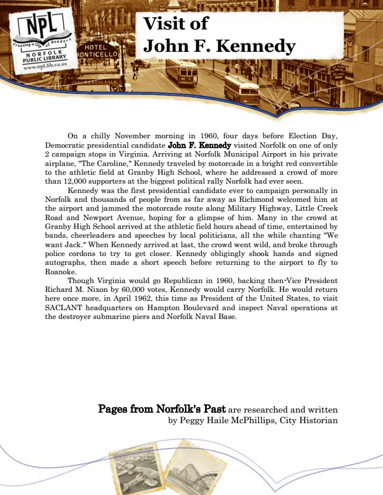

Visit of John F. Kennedy
On a chilly November morning in 1960, four days before Election Day, Democratic presidential candidate John F. Kennedy visited Norfolk on one of only 2 campaign stops in Virginia. Arriving at Norfolk Municipal Airport in his private airplane, "The Caroline," Kennedy traveled by motorcade in a bright red convertible to the athletic field at Granby High School, where he addressed a crowd of more than 12,000 supporters at the biggest political rally Norfolk had ever seen.
Kennedy was the first presidential candidate ever to campaign personally in Norfolk and thousands of people from as far away as Richmond welcomed him at the airport and jammed the motorcade route along Military Highway, Little Creek Road and Newport Avenue, hoping for a glimpse of him. Many in the crowd at Granby High School arrived at the athletic field hours ahead of time, entertained by bands, cheerleaders and speeches by local politicians, all the while chanting "We want Jack." When Kennedy arrived at last, the crowd went wild, and broke through police cordons to try to get closer. Kennedy obligingly shook hands and signed autographs, then made a short speech before returning to the airport to fly to Roanoke.
Though Virginia would go Republican in 1960, backing then-Vice President Richard M. Nixon by 60,000 votes, Kennedy would carry Norfolk. He would return here once more, in April 1962, this time as President of the United States, to visit SACLANT headquarters on Hampton Boulevard and inspect Naval operations at the destroyer submarine piers and Norfolk Naval Base.
Pages from Norfolk's Past are researched and written by Peggy Haile McPhillips, City Historian